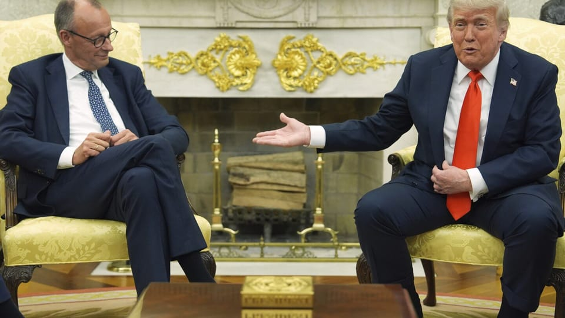

世界苦茶06月06日新闻 | 37条 | 习特通话并邀请其访华

习特通话并邀请其访华 | 特朗普马斯克矛盾快速升级 | 中国批评欧盟与菲律宾关系 | 特朗普史无前例制裁国际刑事法庭法官
每天三件事：
苦茶数据
美元兑人民币：7.17（昨日7.18，前日7.19）
美元兑日元：143.84（昨日143.06，前日144.03）
上证指数：3382（昨日3384，前日3376）
标普500指数：5939（昨日5970，前日5970）
比特币：102898（昨日104821，前日105616）
布伦特原油：65.14（昨日64.83，前日65.44）
中国新闻
• 习近平邀特朗普访华 ：习近平6月5日应约同特朗普90分钟通话。双方同意继续落实好日内瓦共识，尽快举行新一轮会谈，时间地点将在确定后尽快公布。双方讨论了经贸谈判协议的部分细节。习近平说，美方应实事求是看待取得的进展，撤销消极举措。元首要为中美关系把舵定向，尤其要排除各种干扰破坏。双方应增进外交、经贸、军队、执法等各领域交流。就对台军售，习近平说美国应当避免台独分裂分子把中美拖入冲突对抗的危险境地。特朗普表示继续奉行一个中国政策。双方没有讨论俄乌或伊朗问题。特朗普说：美方欢迎中国留学生来美学习。十分尊重习近平主席，美方乐见中国经济保持强劲增长，美中合作可以做成很多好事。习近平邀请特朗普夫妇访华，特朗普诚挚感谢并作对等表示。中国商务部发言人当日表示，将批准符合规定的稀土出口申请。特朗普通话后说，稀土相关事宜应当已无任何疑问。
• 习近平表示，应撤消极举措 ：中国国家主席习近平星期四晚同美国总统特朗普通电话时，谈到中美关税战的休战协议。习近平说，美国应实事求是看待取得的进展，撤销对中国实施的消极举措，并表示“中国人一向言必行、行必果，既然达成了共识，双方都应遵守”。央视新闻客户端星期四晚10时30分披露习近平与特朗普通电话的内容。据报道，习近平在通话中说，校正中美关系这艘大船的航向，“需要我们把好舵、定好向，尤其是排除各种干扰甚至破坏，这尤为重要”。习近平称，根据美国提议，两国经贸牵头人在日内瓦举行会谈，迈出了通过对话协商解决经贸问题的重要一步，受到两国各界和国际社会普遍欢迎，也证明对话和合作是唯一正确的选择。
• 校园贷卷土重来预警 ：非法“校园贷”近期卷土重来，中国教育部下辖的全国学生资助管理中心发布预警。据新华社报道，记者星期四从中国教育部获悉，全国学生资助管理中心发布2025年第2号预警，提示广大学生警惕非法“校园贷”陷阱。预警称，非法“校园贷”近期卷土重来，严重损害了广大学生的切身利益。一些不法网贷平台以门槛低、办理快、额度高、利率低为噱头，诱导学生过度消费、盲目借贷，使学生陷入债务困境、面临高利贷风险，部分学生因无力偿还债务而遭受非法催收，引发一系列严重后果。
• 散播抗战谣言遭处罚 ：两名中国网民因捏造并散播抗日战争相关网络谣言，被警方行政处罚。中国公安部网络安全保卫局公众号星期四发文强调，抗日战争承载了极为深厚的历史意义和现实意义，网安部门依法打击涉抗日战争网络谣言，并公布两起典型案例。据通报，今年1月，张姓网民恶意编造“红军资助关东军”等不实信息，否定中国共产党领导下的东北抗日武装率先举起民族抗日大旗的历史事实。
• 欧盟称中国崛起勿牺牲欧盟 ：欧盟委员会贸易专员谢夫乔维奇说，中国的崛起不应以牺牲欧洲经济为代价。据路透社报道，谢夫乔维奇星期四说：“我们重视与中国建立新的经贸关系。不过，中国令人瞩目的崛起，不能以欧洲经济的利益为代价。”中国政府今年4月对七类中重稀土元素及若干磁体实施出口限制，要求出口商申请许可。此举已对全球汽车制造商、航空航天企业、半导体公司，以及军工承包商所依赖的关键供应链造成冲击。
• 北京法官卷款潜逃日本 ：北京市第三中级法院一名执行助理法官据报卷走巨额执行款潜逃日本，目前下落不明。财新网星期三报道了这一消息，但该报道星期四在财新网上已无法找到。尽管如此，相关报道的信息和截图仍在微信等网络平台流传。香港《星岛日报》和台湾《太报》引述财新的报道称，涉案的法官姓名是白彬，山西人，90后。2014年夏，他进入北京三中院执行局，案发前任执行助理法官。
• 中方批欧盟南海言论 ：中国驻菲使馆提醒菲律宾不要幻想依靠域外势力解决中菲南中国海争端，同时敦促欧盟停止挑事生非。据中国驻菲律宾大使馆微信公众号消息，驻菲使馆发言人星期四回应欧菲外交会晤涉华言论，强调中菲南中国海分歧本质是领土主权争议，领土主权问题超出《联合国海洋法公约》的调整范围，南中国海仲裁案临时仲裁庭违反“国家同意”原则，所作裁决是非法的、无效的，没有任何拘束力。“中方不接受、不承认该裁决，不接受任何基于该裁决的主张和行动”。发言人指出，欧盟不是南中国海争议当事方，无权干涉中菲之间的南中国海分歧，更无权指责中方正当海上维权行动，敦促欧方尊重中方在南中国海的领土主权和海洋权益，停止挑事生非。
• 澳总理预计今夏访华 ：澳大利亚总理阿尔巴尼斯据报将于今年夏天访华，并与中国国家主席习近平会面。香港《南华早报》星期四引述知情人士报道，阿尔巴尼斯预计将在7月或8月抵达北京，期盼能与习近平进行会谈。与此同时，中国与欧盟也计划于7月在北京举行中欧峰会。如果成行，阿尔巴尼斯将成为最新一位前往北京进行贸易谈判的世界领导人。
亚太印太新闻
• 韩新总理人选曾留学清华 ：韩国总统李在明提名金民锡为总理，金民锡曾到中国留学，在北京清华大学获得法学硕士学位。公开资料显示，金民锡毕业于首尔大学社会系，获美国哈佛大学肯尼迪政治学院行政系硕士学位，并在中国清华大学法学院获得法学硕士学位。他1991年步入政坛，1996年当选第15届国会议员后成功连任，2020年当选第21届国会议员之后连任两届。金民锡是共同民主党最高委员。在清华大学法学院官网的《复建后法学院毕业生校友名录》中查询，在LLM09一栏中有金民锡的名字，证实他于2009年入学。 （翻评：走的是中国官员路径啊，哈佛肯尼迪学院加清华。）
• 台县市首长抗议补助削减 ：因不满台湾行政院扣减地方补助拨款，台北市长蒋万安率领九名国民党籍县市首长赴行政院陈情，表达反对“任中央宰割”的立场。综合台湾《联合报》《中国时报》报道，今年1月，凭借国民党与民众党的多数优势，台湾立法院通过删减今年度中央政府总预算，并要求行政院自筹删减金额高达636亿元新台币。台湾行政院认为这项要求窒碍难行，因此决定统一从中央对地方政府的一般性补助款中削减25%，但招致在野党强烈反对。
• 日本吸纳哈佛学生对抗美禁令 ：美国总统特朗普撤销哈佛大学接收国际学生的资格，被求才若渴的日本视为网罗人才的良机。日本各大学为减轻受影响学生的负担，推出免学费支援方策，要在美国学界动荡之际发挥作用。除了针对哈佛大学，特朗普政府据报已暂停新的学生签证面谈，还宣称要“强势地”撤销中国留学生的签证。日本TBS电视台报道，专门为中国学生办留学签证的一家中介公司透露：“美方的签证申请暂停，连申请材料都不收。我们收到海量的父母咨询，他们都在担心孩子的留美计划泡汤。”
• 朝鲜受损驱逐舰已扶正，6月5日下午安全纵下水并在码头系留： 下一阶段微调修复作业将在罗津修船厂干船坞进行，预计作业7至10天，在劳动党八届十二中全会前完成。
科技新闻
• 中国拟定强制性驾驶辅助标准 ：中国官方发布通知，将对智能网联汽车组合驾驶辅助系统立项，制定强制性国家标准，并公开征求意见。全国标准信息公共服务平台星期三公示了关于征求《智能网联汽车组合驾驶辅助系统安全要求》拟立项强制性国家标准项目意见的通知。据人民财讯报道，国家标准计划《智能网联汽车组合驾驶辅助系统安全要求》由中国工业和信息化部提出，委托全国汽车标准化技术委员会智能网联汽车分会执行，主要起草单位包括中国汽车技术研究中心有限公司、东风汽车集团股份有限公司、华为技术有限公司等。
• 美称中无能力量产先进芯片 ：美国商务部长卢特尼克称，中国目前不具备大规模生产高精尖晶片的能力。据彭博社报道，卢特尼克星期三在参议院拨款分委会听证会上作证时说：“他们说他们在生产，但实际上并没有。”卢特尼克估计，中国或可生产约20万枚可用于例如训练人工智能服务或运行智能手机的先进晶片，与需求相比，这一数字可谓微乎其微。
• 意法半导体将裁员5000人 ：意法半导体将在未来三年内削减多达5000个职位，其中包括今年稍早已公布的2800人裁员计划。意法半导体董事长兼总裁瑟理日前在法国巴黎银行主办的活动上透露，裁员将通过自然流失与自愿离职方式推进，目前与各地利益相关方及政府的协商“进展顺利”。瑟理指出，在推进相关计划过程中，某个国家的执行速度“可能会稍慢”，暗指裁员谈判仍在进行中的意大利。意大利政府近期对瑟理表达不满，并指控其涉嫌内部交易，尽管公司已否认相关指控。
财经新闻
• 美大使会晤美企传稳信号 ：在中美贸易紧张局势升温之际，美国驻华大使庞德伟据报与在华美资企业代表会面，释放稳定信号，重申两国将继续保持经贸往来。彭博社引述知情人士透露，庞德伟于星期四与美中贸易全国委员会董事会成员举行会谈，表示特朗普政府正寻求与中方展开合作的路径，并支持美国企业继续在中国经营。同日，庞德伟也与其他美国商业组织代表会面，美国商会中国分会在社交媒体发布了相关消息。知情人士还透露，庞德伟计划下周出席霍金路伟律师事务所在北京举办的一场商业活动，预计将有约100位企业界人士参与。 （翻评：中国这个翻译太奇怪了，一般把这个人的名字翻译为“普度”。）
• 花旗在华裁员3500人 ：花旗集团将在中国裁减约3500个技术岗位，作为其全球精简举措的一部分。这家美国金融服务机构同时重申，致力于在中国提供金融服务。据彭博社报道，花旗在声明中说，其上海和大连解决方案中心预计将在第四季度初完成裁员。部分岗位将转移至其他中心，以支持花旗的全球网络。花旗拒绝透露中国地区的员工人数。花旗称全资拥有的花旗银行有限公司将不受影响，并补充说花旗将继续投资该部门，以支持在华企业和机构客户。
• 碧桂园拟年内完成债重组 ：深陷债务危机的中国房企碧桂园，目标在今年内完成境外债重组工作。据观点网报道，碧桂园首席财务官伍碧君6月5日在线上股东会议上说，公司已与超过70%的债权人就高息债务达成初步共识，目标是在年内完成整体境外债务的重组。至于境内债务，她透露，碧桂园已在4月完成债务展期，目前正制定新的方案，力争在今年下半年形成一套综合解决机制。“现在有几间公司已经重组，比较顺利，希望明年上半年能完成境内公开市场债的重组。”
• 商务部整治汽车恶性竞争 ：针对当前汽车行业存在的“内卷式”竞争现象，中国商务部表态，将加强综合整治与合规引导，维护公平竞争市场秩序，促进行业健康发展。综合央视网和新华社报道，中国商务部发言人何咏前在星期四举行的新闻发布会上表示，近期商务部有关司局组织汽车行业协会、研究机构和相关企业座谈，听取意见建议，研究进一步做好汽车流通消费工作。何咏前说，商务部下一步将会同有关部门，继续加强对汽车消费市场跟踪、研究和政策引导，推动破除制约汽车流通消费堵点、卡点，更好满足居民多样化、个性化的消费需求。
• 中国加强海外收入征税 ：中国据报正在加大对公民境外收入的征税力度，打击目标从去年的超级富豪扩展至资产相对较少的群体。彭博社星期四引述知情人士报道，中国税务部门目前正在审查一系列海外收入，包括投资回报、股息和员工股票期权。根据中国现行税法，投资收益最高可被征收20%的税率。与去年主要针对资产在千万美元以上人群的征税行动不同，近期税务服务机构收到的大量咨询来自资产不足100万美元的客户。知情人士称，拥有海外投资、特别是涉及美股和港股的中国居民，已成为税务机关的重点关注对象。
• 小红书估值飙至260亿美元 ：中国社交媒体平台小红书在一家大型基金的市场交易中，估值飙升至260亿美元，这一罕见增速凸显这家社交媒体新贵正逐步蚕食TikTok在美国市场的地位。据彭博社星期四报道，这一最新估值并非来自公开融资，而是源自金沙江创投旗下的一份股份交易文件。文件披露该基金所持有的小红书股份发生了交易。这份源自GSR IV基金的投资组合报告显示，该基金持有小红书8.47%的股份，而小红书占该基金总资产的91%。
• 证监会支持科企上市 ：中国证监会首席律师程合红说，将以更大的力度支持优质未盈利科技企业上市。综合财联社和中证网报道，程合红星期四在2025天津五大道金融论坛上发表主旨演讲。程合红说，下一步，中国证监会将深化股票发行注册制改革，坚持以信息披露为核心，以市场中介机构核查把关为基础，以从严监管追责为保障，持续推进科创板、创业板发行上市制度改革，进一步增强制度包容性、适应性。
• 澳前总理反思达尔文港协议 ：在澳大利亚政府正计划向中国企业收回达尔文港租约的背景下，澳洲前总理特恩布尔说，自己在10年前上任初期，本有机会叫停这项协议。特恩布尔星期四接受彭博电视采访时说，安全机构当时向他保证，上述交易不存在安全隐患。但特恩布尔认为，“时代已经变了”，现在或许确实有理由将达尔文港收归澳洲所有。“说实话，一家澳洲公司不可能在中国买到任何港口设施。”
• 中国央行罕见预告万亿买断式逆回购对冲天量存单到期 ：中国银行业者6月面临4万亿元人民币天量同业存单到期之际，中国央行突然预告周五将进行万亿买断式逆回购操作，稳定市场预期的意图十分明确；同时在30年特别国债招标前夕释放信号，亦表明货币支持政府债发行的底气。分析人士指出，央行在月初就早早出手对冲潜在的流动性压力，已亮明坚定维稳的态度，在持续配合财政发力的同时，亦为中美关税谈判期间的不确定性留足“安全垫”。
• 美国上周初请失业金人数升至七个月最高，4月进口降幅创纪录 ：美国上周初请失业金人数增至七个月来最高水平，在关税造成的经济阻力加剧下，劳动力市场状况正趋软。美国劳工部报告还显示，随着特朗普总统激进的贸易政策造成不确定性，雇主不愿增加员工人数，失业人员很难找到新的工作机会。
• 卢特尼克呼吁更严格执行对华出口管制： 美国商务部长霍华德·卢特尼克呼吁加强对美国出口管制的执行，以防止中国窃取可能支持北京在人工智能和航空等领域雄心的关键美国技术。卢特尼克周四在众议院拨款小组委员会就商务部预算举行的听证会上说：“他们正试图抄袭我们的技术。在人工智能霸权的竞争中，他们落后于我们，但他们正与中央政府合作，试图赶上我们，超过我们，从而在智力上占据优势。”卢特尼克主张为负责监督出口管制工作的工业与安全局提供更多资金。他说，额外的资源将有助于扩大访问仓库和出口商的代理商数量，以确保遵守美国对中国和其他美国对手国的销售限制。 （翻评：可以配合特习通话看待。）
俄乌战争
• 俄战机被袭将修复 ：俄罗斯外交部副部长里亚布科夫说，俄军战机在日前乌克兰的袭击中受损，但并未遭到摧毁，俄罗斯会修复这些战机。路透社报道，乌克兰上星期天对俄境内深处机场发动袭击，这些机场部署俄军的重型轰炸机，是俄罗斯战略核力量的组成部分。乌方称袭击击中40多架飞机。两名美国官员则对路透社透露，美国估计有20多架战机被击中，约10架遭摧毁。
• 美乌探讨重建基金运作 ：乌克兰第一副总理斯维里登科说，乌克兰与美国正讨论在今年底前让美乌重建投资基金正式运作。路透社报道，斯维里登科星期三在华盛顿，与美国财政部长贝森特和美国国际开发金融公司举行会谈，该公司将成为矿产基金的合作伙伴之一。斯维里登科说：“我们讨论了非常具体的步骤，以确保基金能在今年内启动运作。”
• 朝媒抨马克龙言论荒唐 ：朝鲜官方媒体抨击法国总统马克龙就俄朝关系发表的言论“轻率”，称是“令人震惊的胡言乱语”。朝鲜国家通讯社朝中社星期四发表的一篇评论文章中，抨击马克龙最近在新加坡香格里拉对话上的言论。评论文章写道：“如果马克龙认为他可以通过质疑朝俄合作关系来掩盖北约试图在亚太地区搞军事挑衅的邪恶意图，那就大错特错了。”
• 特朗普与德国总理默茨会晤释善意，聚焦乌克兰、贸易与驻军议题 ：美国总统特朗普和德国总理默茨在白宫举行了一场友好的会晤，双方就乌克兰、贸易以及驻军问题进行了讨论，会面氛围融洽，并未出现其他外国领导人来访椭圆形办公室时常见的激烈交锋。特朗普称默茨是德国的优秀代表，同时也是 "难缠的"，并将此形容为一种赞美。他说美军将继续驻扎在德国，并表示欢迎柏林承诺增加国防开支。默茨对美国有线电视新闻网称，欧洲正在寻求更多地摆脱对中国的依赖。
其他新闻
• 联合国加沙停火草案被美否决 ：联合国安理会一份要求在加沙实现持久停火的决议草案，但美国一票否决而未获通过。法新社报道，联合国安理会星期三针对这项草案作出表决，最终投票结果为14票赞同和1票反对，而美国是唯一投下反对票的国家。由于作为常任理事国的美国行使否决权，导致决议草案未获通过。这是自去年11月以来，由15个成员国组成的安理会首次就加沙局势进行投票。此次否决也是自美国总统特朗普今年1月就任以来，华盛顿首次采取此类行动。
• 以军寻回遇难人质遗体 ：以色列军方在加沙找到两名遇难人质的遗体，已将他们带回以色列。法新社报道，以色列军队与国家安全总局星期四发表联合声明说，以色列在加沙地带南部汗尤尼斯地区的一次夜间营救行动中，找回两名以色列和美国双国籍人质的遗体。根据声明，这两名遇难人质是一对老夫妇，妻子名为朱迪·韦恩斯坦·哈盖，丈夫名为加德·哈盖。两人育有四个孩子和七名孙辈。
• 联合国喀布尔女员遭威胁 ：联合国驻阿富汗首都喀布尔机构的多名女性员工透露，多名身份不明男子因她们的工作而对她们发出威胁，要求她们待在家里。法新社星期四引述多名在喀布尔联合国各机构工作的女性报道，她们在街头和电话中遭到男子威胁。化名为胡达的员工说，她过去几周一直收到大量辱骂信息，指责她“与外国人合作”。她说，她的办公室已建议她居家办公，直至另行通知。
• 德拟扩军至26万人 ：德国国防部长皮斯托留斯说，根据新的北约武器和人员目标，德国须要增兵至6万人。路透社报道，皮斯托留斯星期四在比利时布鲁塞尔参加北约国防部长会议前告诉记者，德国正在加强履行作为欧洲最大经济体的责任，根据北约的防务目标，德国武装部队各军种总共须要增加约5万至6万名现役士兵，未来总兵力达到25万至26万人。北约正在加强兵力，以应对俄罗斯日益增长的威胁。据报道，北约对成员国的新国防计划文件长达数千页，详细说明盟军应如何应对俄罗斯对联盟的攻击。
• 马斯克抨击特朗普税改 ：全球首富马斯克退出政坛后，接连几天抨击美国总统特朗普标志性的税改法案，并呼吁美国民众联系国会议员“扼杀”法案。彭博社报道，马斯克星期三在社媒发文说：“打电话给你的参议员，打电话给你的众议员，让美国破产是不可接受的！”
• 马斯克骂特朗普忘恩负义 ：当地时间周四，马斯克在社交媒体平台上对美国总统特朗普发起全面攻击，他直言没有我，特朗普赢不了大选。他还补充道：“真是忘恩负义。”两人矛盾的核心在于特朗普近期力推的一项税改法案，该法案主要侧重于减税和削减开支，还增加国防支出，并为打击非法移民提供更多资金。特朗普随后在其社交平台Truth Social上回击马斯克，他写道：“埃隆‘快要失控了’。”特朗普还表示：“在我们的预算中，最简单的省钱方式就是终止埃隆的政府补贴和合同，这能节省数十亿、数百亿美元。我一直很惊讶拜登没有这么做!” 当天晚些时候，马斯克更进一步回击称，他将让一艘供美国使用的SpaceX飞船退役。
• 特朗普政府史无前例地对四名国际刑事法院法官实施制裁： 美国总统唐纳德·特朗普领导的政府周四对国际刑事法院的四名法官实施制裁，这是对国际刑事法院向以色列总理本雅明·内塔尼亚胡发出逮捕令以及此前决定对驻阿富汗美军涉嫌战争罪立案调查的史无前例的报复。根据美国国务卿马尔科·卢比奥的声明，华盛顿指定了乌干达的索洛米·巴隆吉·博萨、秘鲁的卢兹·德尔卡门·伊巴涅斯·卡兰萨、贝宁的雷内·阿德莱德·索菲·阿拉皮尼·甘苏和斯洛文尼亚的贝蒂·霍勒尔为制裁对象。